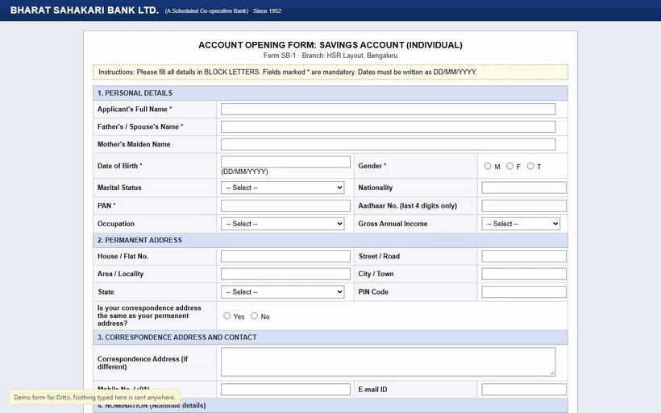
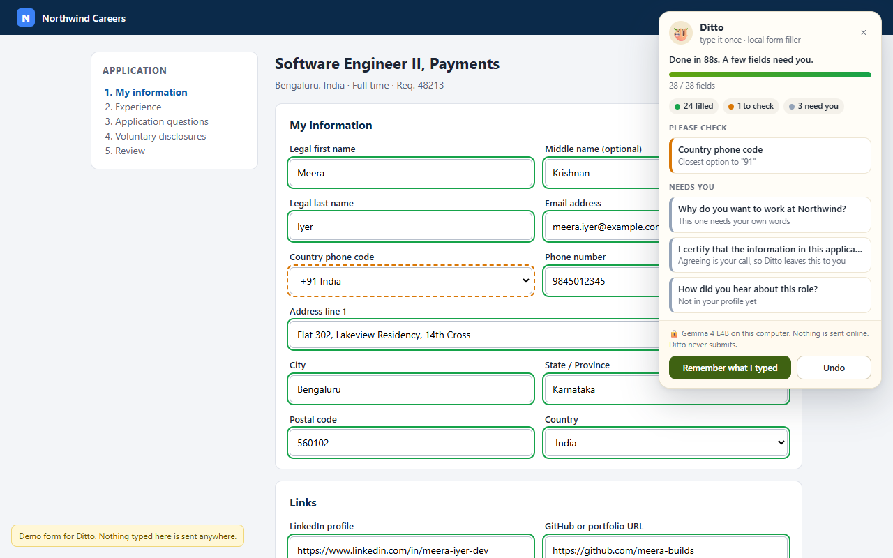
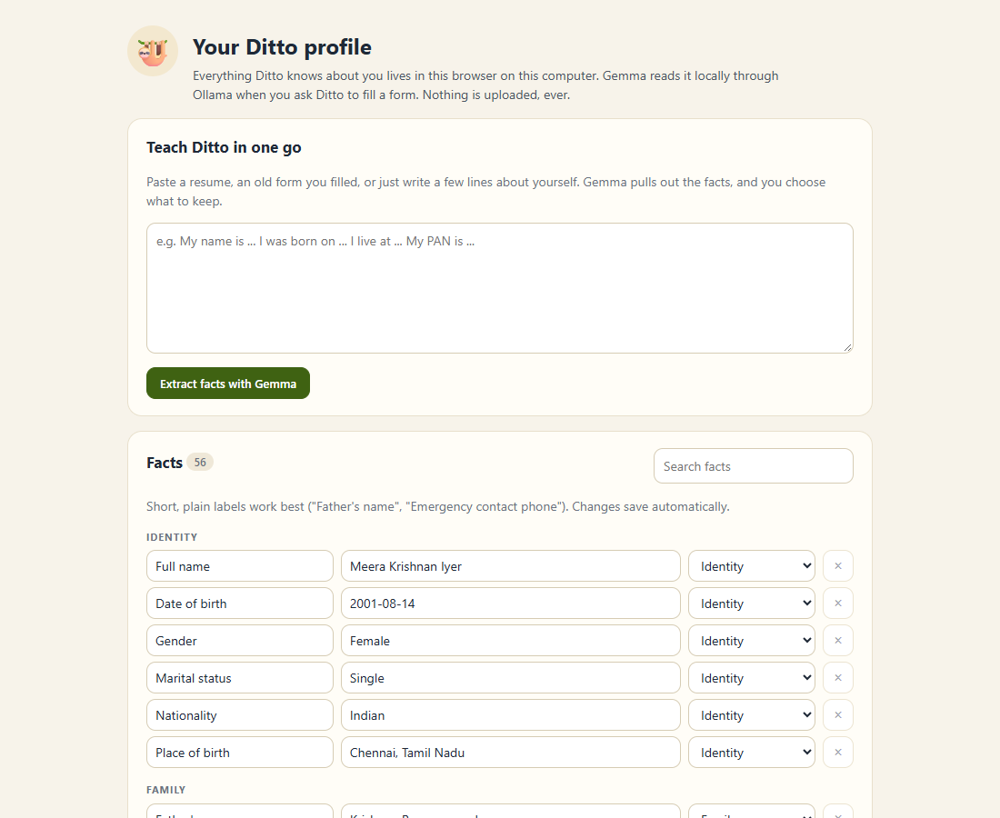

🦥 Slow and steady form filling
A Chrome extension that fills any web form from your private profile, using Gemma 4 running on your own computer through Ollama. Job portals, bank KYC, clinic intake, rental applications, college forms. Your passport number never leaves your laptop.
Open source (MIT) · open-weight model (Apache 2.0) · no account, no cloud, no subscription

It knows your name and email. It has no idea what "Father's / Spouse's Name", "Aadhaar No. (last 4 digits only)" or "Name as per PAN, in BLOCK LETTERS" means.
To fill a KYC form with ChatGPT you'd paste your PAN, passport and address into someone else's server. Every time.
A small open model reads every label in context, so a "Name" under Nominee details gets your mother's name, not yours.


I built five realistic forms (a React job application, an old table-layout bank KYC form, a clinic intake, a placeholder-only rental form and a dark-mode hackathon sign-up) with traps: nominee sections, BLOCK LETTERS, "last 4 digits only", consent boxes, essay questions and fields the profile simply can't answer. Then an automated test drove the real extension through all of them.
| Form | Fields | Right | Wrong (shown green) | First fill | Same form again |
|---|---|---|---|---|---|
| Job application (React) | 28 | 28 | 0 | 50 s | 0.1 s |
| Bank KYC (table layout) | 26 | 26 | 0 | 54 s | 0.1 s |
| Clinic intake | 23 | 23 | 0 | 45 s | 0.1 s |
| Rental application | 18 | 16 | 0 | 27 s | 0.1 s |
| Hackathon sign-up | 19 | 19 | 0 | 26 s | 0.1 s |
| Total | 114 | 112 (98.2%) | 0 | 202 s | 0.4 s |
"Right" counts fields filled correctly and fields correctly left empty. Gemma 4 E4B (Q4) on an Intel Core Ultra 5 laptop, CPU only. Full per-field report in the repo.
How small can the sloth be? The smaller Gemma 4 E2B scored 104/114, but 8 of its mistakes were shown green: it put the current address into the Permanent address section. Real facts in the wrong place can't be caught by a tripwire, so Ditto prefers E4B.
127.0.0.1, and can't even read a page until you press the button.ollama pull gemma4:e4b (about 6 GB; use gemma4:e2b on 8 GB machines).chrome://extensions, switch on Developer mode, click Load unpacked and pick the unzipped folder.Works in Chrome, Edge, Brave and other Chromium browsers. No Ollama settings to change: Ditto handles the connection itself.
Forms are where we hand over the most sensitive facts we have: ID numbers, addresses, health conditions, family members. An open-weight model running locally is the only way I'd trust a robot with them. It works offline, costs nothing per form, can't be switched off or repriced, and anyone can read every line of the code that touches their data.